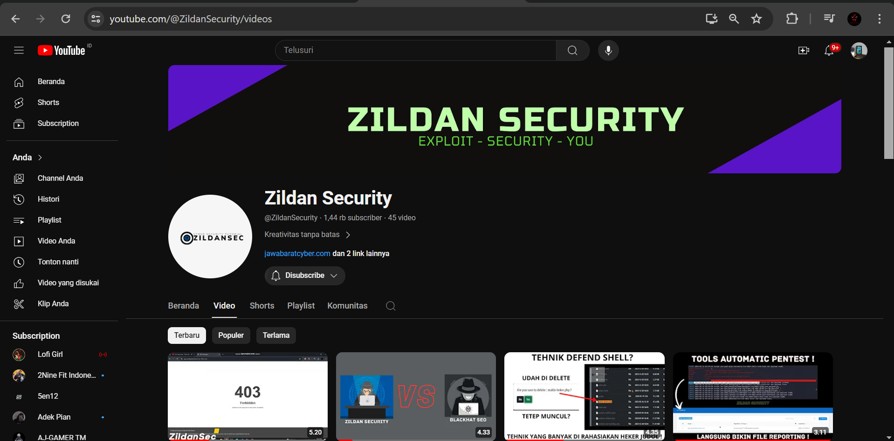

My Work

Wazuh Siem Tasikmalayakota
Saya berpatisipasi dalam melakukan konfigurasi dan installasi pada Wazuh milik tasikmalayakota seperti Detection webshell, Active Response, dashboard costum, Dan lain-nya.

Tools Scanning anomaly file
Saya memiliki sebuah program yang dimana bisa memundahkan anda untuk mencari sebuah file anomaly terutama seperti shellbackdoor, landing page judi online, dan melihat cronjob yang mencurigakan. Script ini masih dalam tahap pengembangan dan akan terus di update.

Youtube Hacking
Saya membuat Youtube dengan hidden gems atau ilmu yang tersembunyi yang berhubungan dengan hacking terutama Pentest.